Wie viel kostet Insektenschutz?
Die Produkte sind sehr individuell — Preise unterscheiden sich je nach Größe, Farbe, Gewebeart und System stark. Seriös beantworten lässt sich das erst nach einem kostenlosen Vor-Ort-Termin.
Maßgefertigt in Deutschland und Österreich
Insektenschutz und Lichtschachtabdeckungen nach Maß — für Fenster, Türen, Dachfenster und Kellerschächte. Aus einer Hand.
0 km ab Gersthofen
in 0 Stunden
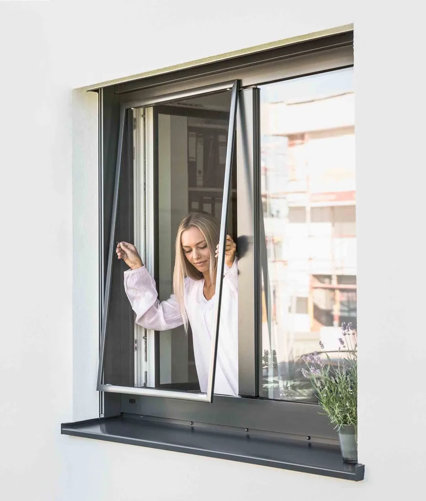
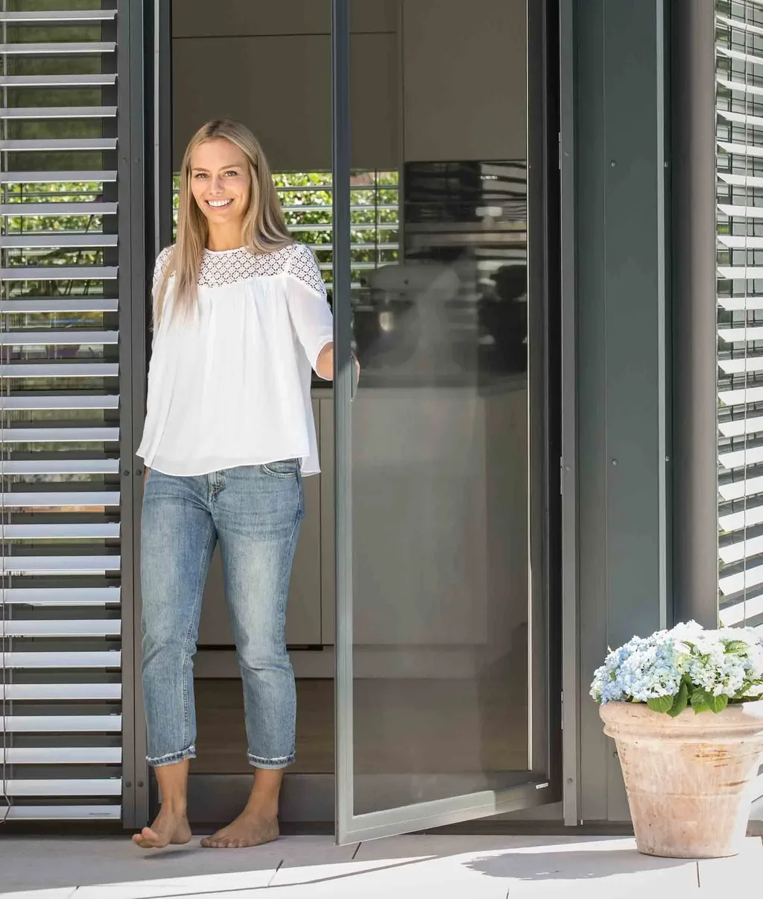
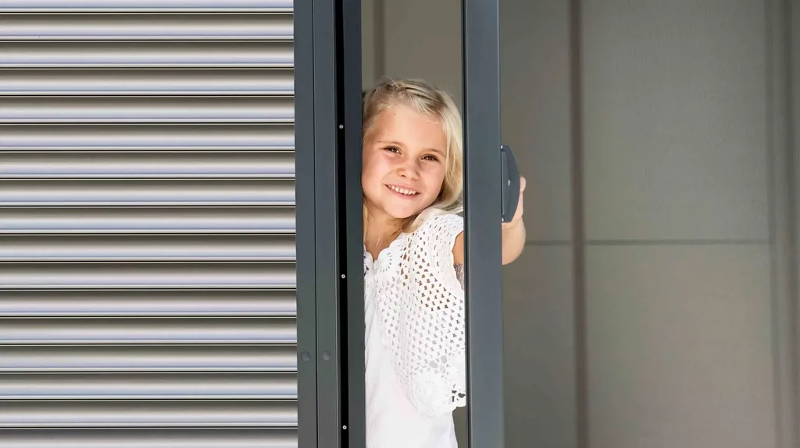
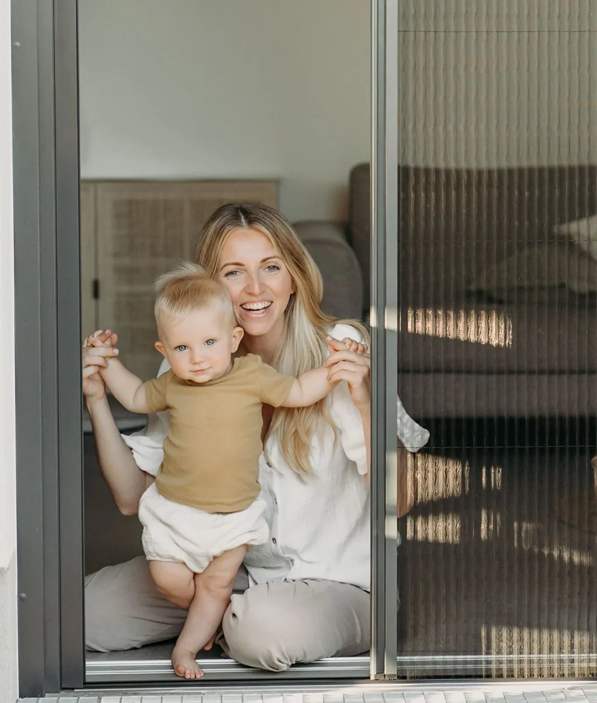
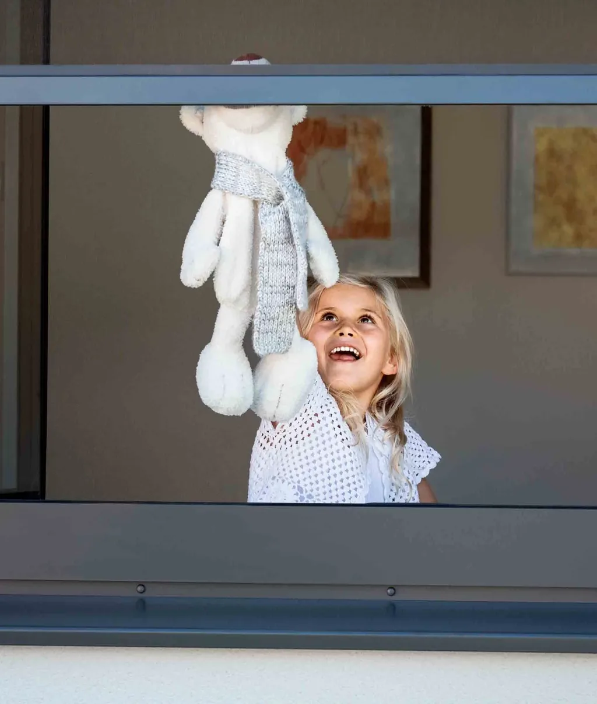
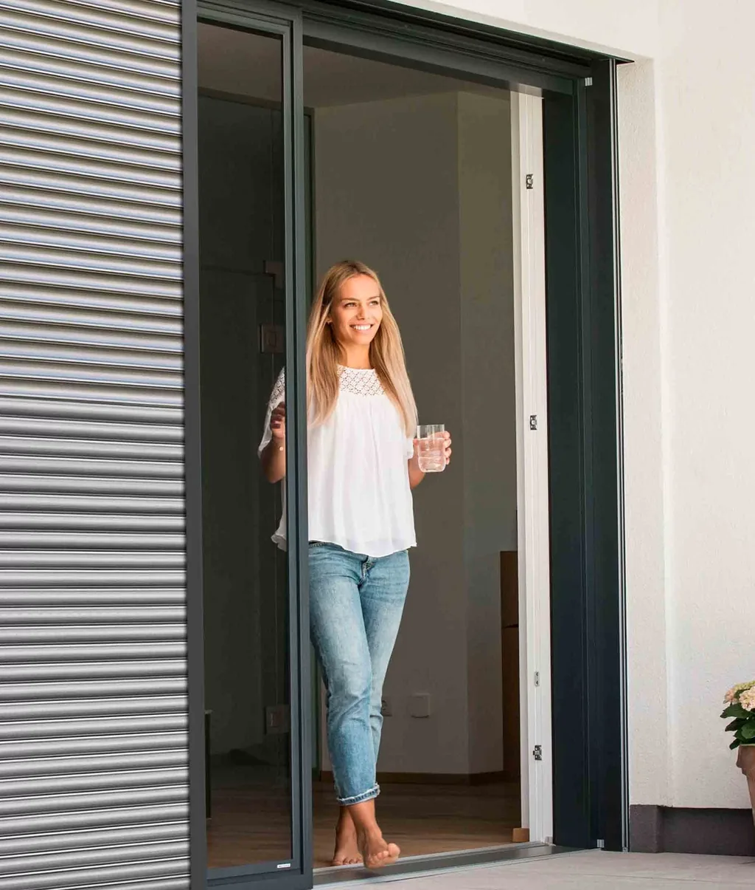
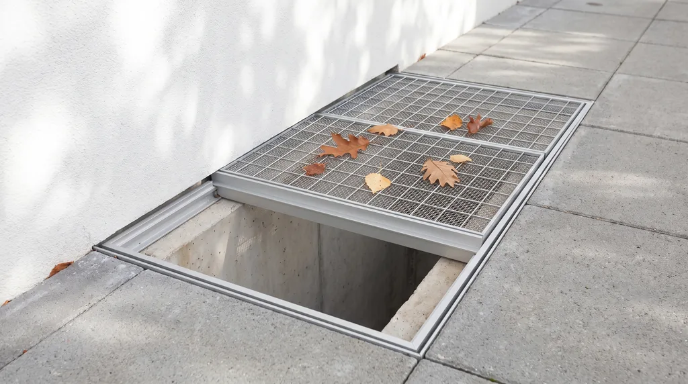
System 1 von 7
Der Klassiker fürs Fenster. Wird von außen eingehängt, sitzt millimetergenau im Rahmen und lässt sich zum Putzen in Sekunden aushängen.
System 2 von 7
Für Balkon- und Terrassentüren, die täglich benutzt werden. Öffnet und schließt wie eine normale Tür — auf Wunsch mit selbstschließendem Beschlag.
System 3 von 7
Schwingt in beide Richtungen auf und fällt von selbst zurück. Die praktische Lösung überall dort, wo man die Hände voll hat.
System 4 von 7
Faltet sich seitlich zusammen und verschwindet fast vollständig. Ideal für breite Elemente und große Glasflächen.
System 5 von 7
Läuft nach oben in den Kasten und ist unsichtbar, wenn es nicht gebraucht wird. Auch für Dachfenster erhältlich.
System 6 von 7
Läuft seitlich in der Schiene — die passende Antwort auf große Schiebetüren und Hebe-Schiebe-Elemente.
System 7 von 7
Hält Laub, Spinnen und Schmutz aus dem Kellerschacht. Verschiedene Systeme zur Wahl — auf Wunsch begehbar oder regensicher, passgenau für jede Schachtgröße gefertigt.
Einhängen & Aushängen
Auf Wunsch selbstschließend
Beidseitig schwingend
Faltet seitlich weg
Rollt in den Kasten
Läuft in der Schiene
Mehrere Systeme zur Wahl
Fenster · Türen · Dachfenster
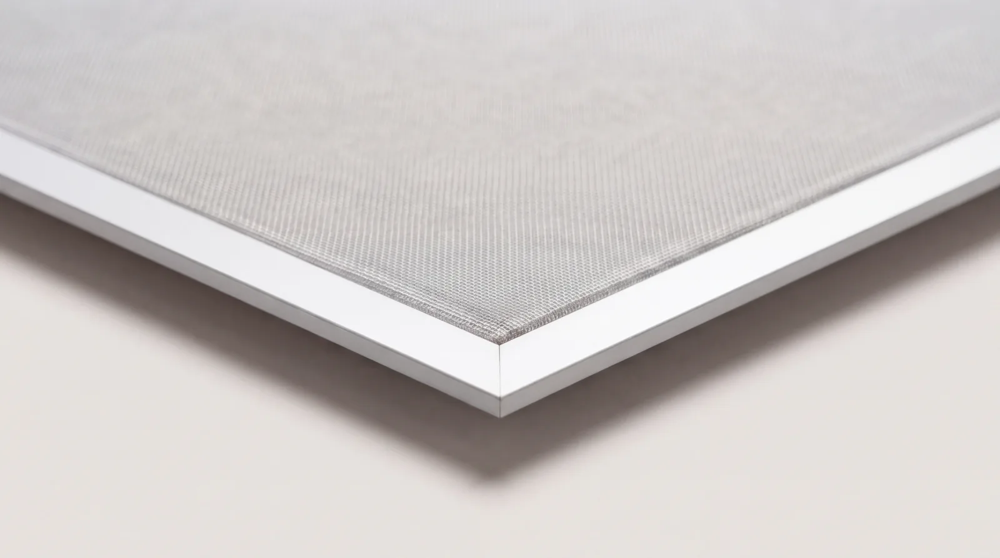
Jedes Element wird nach Aufmaß gefertigt — millimetergenau für Ihre Einbausituation. Kein Zuschneiden, keine Kompromisse.
Aufmaß anfragenFür Allergiker
Spezielle Pollenschutz-Gewebe filtern einen Großteil der Pollen aus der einströmenden Luft — für Menschen mit Heuschnupfen bedeutet das spürbar mehr Wohnkomfort und erholsameren Schlaf.
Je nach Raum wählen Sie das passende Gewebe: Pollenschutz für Schlaf- und Wohnbereich, strapazierfähiges Haustier-Gewebe, das Katzenkrallen standhält, oder transparentes Gewebe mit hoher Licht- und Luftdurchlässigkeit.
Pollenschutz — bei offenem Fenster
bis zu99%
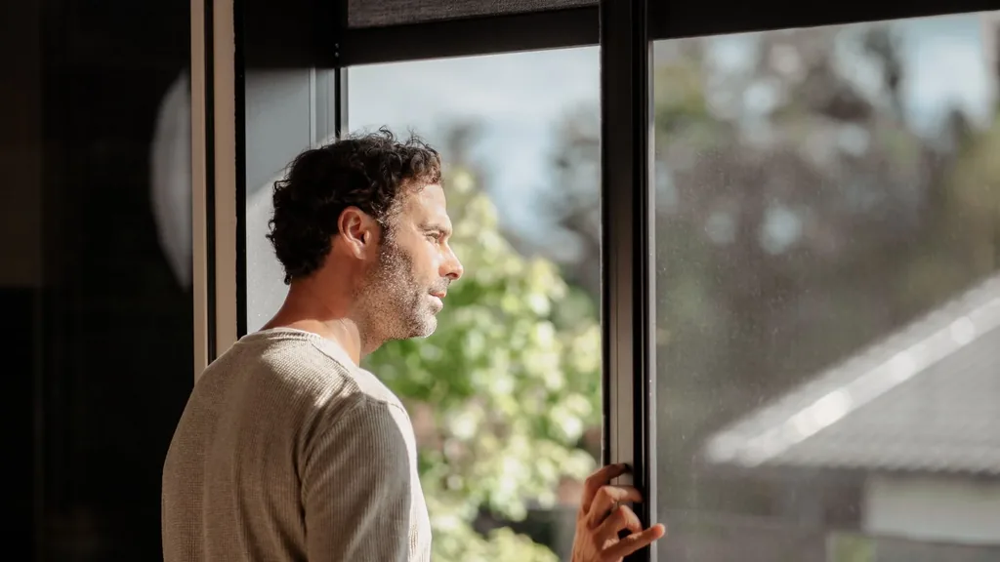
Kellerschächte
Abdeckungen nach Maß halten Laub, Spinnen und Schmutz draußen — und lassen Licht und Luft weiterhin in den Keller. Auf Wunsch begehbar und auf Wunsch regensicher — verschiedene Systeme zur Wahl.
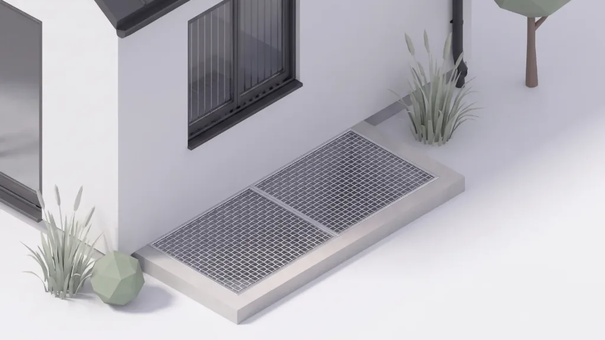
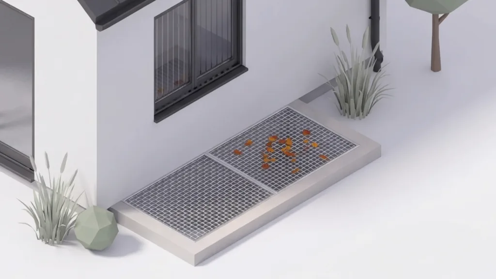
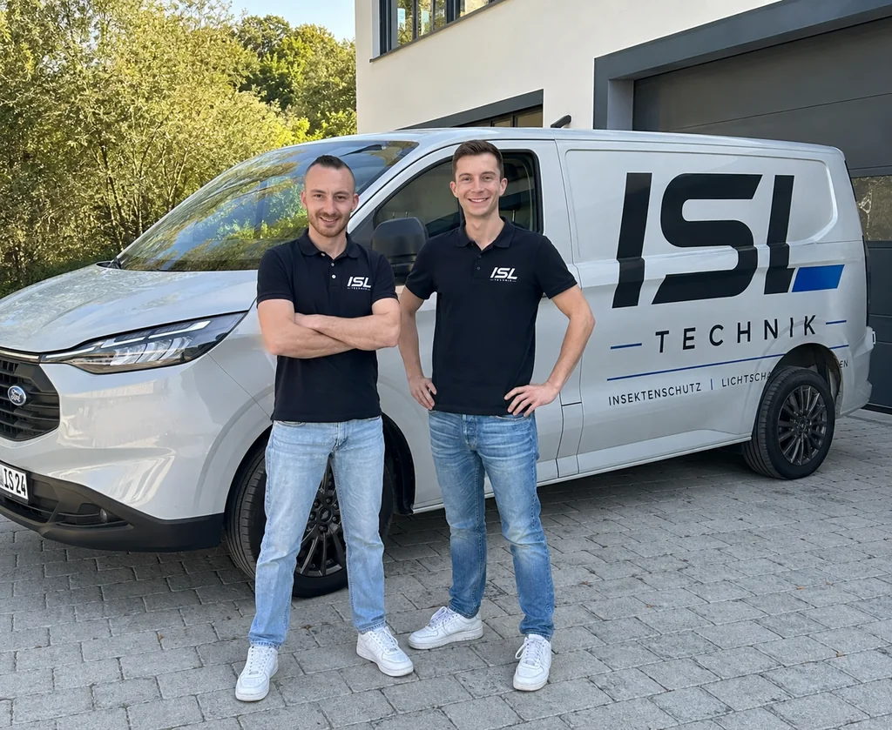
Dennis Vetter & Dominik Hayda
„Beratung, Aufmaß und Montage liefen bei uns komplett ohne Reibung — und der Termin stand innerhalb einer Woche."
— Markus B., Friedberg
„Wir haben zwei Katzen. Das verstärkte Gewebe hält seit zwei Sommern — genau wie versprochen."
— Sabine K., Gersthofen
„Seit dem Pollenschutz am Schlafzimmerfenster schlafe ich im Frühjahr endlich wieder durch."
— Julia M., Königsbrunn
In drei Schritten
Wir sehen uns die Einbausituation vor Ort an, nehmen Maß und beraten Sie, was sinnvoll und machbar ist.
Konkret und aussagekräftig, mit allen Details zu Produkt und Montage. Ohne versteckte Kosten oder spätere Aufschläge.
Nach Ihrer Bestätigung werden die Elemente millimetergenau gefertigt — den Montagetermin stimmen wir direkt mit Ihnen ab.
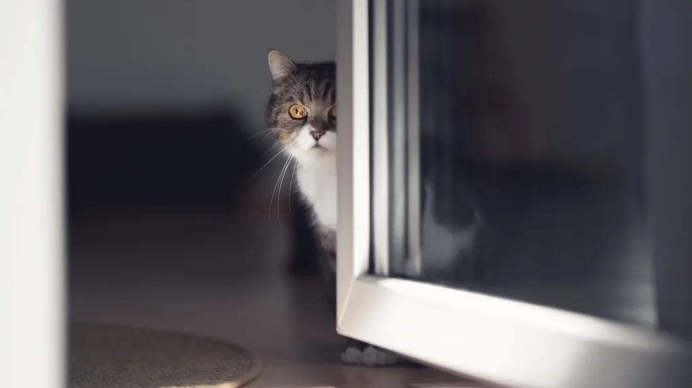
Eigenes Team
Häufige Fragen
Ihre Frage ist nicht dabei? Rufen Sie einfach kurz an — 0160 92726131.
Die Produkte sind sehr individuell — Preise unterscheiden sich je nach Größe, Farbe, Gewebeart und System stark. Seriös beantworten lässt sich das erst nach einem kostenlosen Vor-Ort-Termin.
Nein. Unsere Elemente können bedenkenlos im Winter montiert bleiben. Die Rahmen lassen sich aber auch einfach ein- und aushängen, wenn Sie das möchten.
Ja. Durch spezielle Haustier-Gewebe ist das kein Problem. Je nach Anforderung verbauen wir strapazierfähigere Gewebe, die auch Katzenkrallen standhalten.
Die Firma Schlotterer aus Adnet (Österreich) und die Firma Neher aus Frittlingen (Deutschland) — beides etablierte, innovative Unternehmen.
Unser Firmensitz ist in Gersthofen. Von dort betreuen wir Kunden in einem Radius von rund 35 Kilometern — darunter Augsburg, Donauwörth und Landsberg am Lech.
Ja. Spezielle Pollenschutz-Gewebe gewährleisten einen hohen Schutz vor Pollen. Gerade für Allergiker mit Heuschnupfen bedeutet das mehr Wohnkomfort und erholsameren Schlaf.
Ausschließlich wir selbst. Wir arbeiten nicht mit Subunternehmern und vergeben keine Aufträge an andere Auftragnehmer.
Die meisten unserer Systeme sind für handwerklich geschickte Personen auch selbst montierbar. Gerne liefern wir Ihnen nur die Elemente.
Lieferung und Montage von Insektenschutz und Lichtschachtabdeckungen nach Maß — von der Beratung über das Aufmaß bis zur fachgerechten Montage.
Kontakt
Wir melden uns innerhalb von 24 Stunden telefonisch, klären die ersten Fragen und vereinbaren auf Wunsch direkt einen Termin.